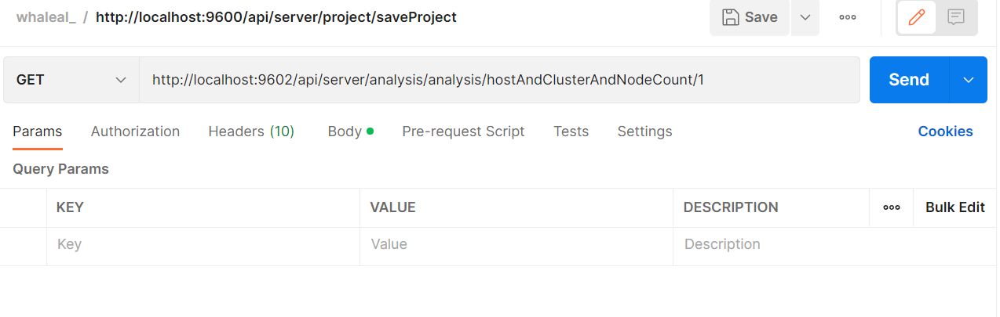

Analysis接口
接口调用时须在请求头中设置whaleal-Token ，填写参数发起请求，返回内容为 JSON 格式的信息，返回特殊实体类将在最后提供实体类表格。 其参数为时间的都以时间戳形式传递。
请求头默认格式，特殊情况特殊声明
whaleal-Token在调用登录接口时返回，在之后调用接口时将token放置请求头中。
| KEY | VALUE |
|---|---|
| Accept-Encoding | gzip,deflate,br |
| Connection | keep-alive |
| Content-Type | application/json |
| whaleal-token | "token" |
1 数据分析
1.1 请求路径
GET: http://{Server-Host}:{端口}/api/server/analysis/analysis//
1.2 请求参数
type: hostAndClusterAndNodeCount,mongoClusterTypeNum,mongoNodeVersionTypeNum,mongoNodeStatusNum,enterpriseAndCommunityNum,
mongoClusterQPS,mongoClusterConnUS,mongoClusterDataSize,mongoClusterStorageSize,hostCPU_US,hostDiskIO,hostNetIn,
hostNetOut,hostAlert,mongoAlert
| Name | Located in | Description | Required | Schema |
|---|---|---|---|---|
| type | Path | 类型 | Yes | String |
| count | Path | 数量 | Yes | int |

1.3 返回结果
| Description | Schema | |
|---|---|---|
| code | 状态符:1000成功,其余异常 | int |
| data | 返回数据 | Document |
{
"code": 1000,
"data": {
"hostCount": [
8
],
"mongoClusterCount": [
4
],
"mongoNodeCount": [
11
]
},
"createTime": [
1664150400000
],
"name": "hostAndClusterAndNodeCount",
"message": "主机,集群,节点数量折线对比图"
}